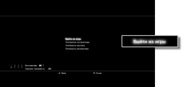

Игра > Воспроизведение программного обеспечениея формата PlayStation®2 и PlayStation® > Запуск/выход из игры
Запуск/выход из игры
Запуск игры
Когда пользователь вставляет диск, игра начинается автоматически.
Выход из игры
Во время игры нажмите кнопку PS на беспроводном контроллере, затем выберите [Выйти из игры].

Примечание
При запуске или закрытии программного обеспечения формата PlayStation®2 назначения номеров контроллеров удаляются. Выполните действия, приведенные ниже, для назначения номеров контролера.
При запуске игры: нажмите кнопку PS на контроллере, когда на экране отображается игра.
При выходе из игры: нажмите кнопку PS на контроллере, когда отображается меню XMB™.
Подсказка
Для сохранения данных из программного обеспечения формата PlayStation®2 / PlayStation® необходимо создать внутреннюю Memory Сard. Подробнее о внутренних Memory Card см. в разделе  (Игра) > [Воспроизведение программного обеспечениея формата PlayStation®2 и PlayStation®] > [Сохраненные данные] в данном Руководстве.
(Игра) > [Воспроизведение программного обеспечениея формата PlayStation®2 и PlayStation®] > [Сохраненные данные] в данном Руководстве.
Сброс игры
Во время игры нажмите кнопку PS на беспроводном контроллере, затем выберите [Сбросить игру] на отображаемом экране. Возможность сброса игры предусмотрена только для программного обеспечения форматов PlayStation®2 или PlayStation®.
Примечания
- В системе PS3™ некоторое программное обеспечение формата PlayStation®2 и PlayStation® может воспроизводиться не так, как в системах PlayStation®2 или PlayStation®, или вообще не работать.
- Программное обеспечение формата PlayStation®2 не воспроизводится в некоторых системах PS3™. Подробнее см. в разделе [Типы воспроизводимых дисков], на региональном веб-сайте SIE или в документации к системе PS3™.